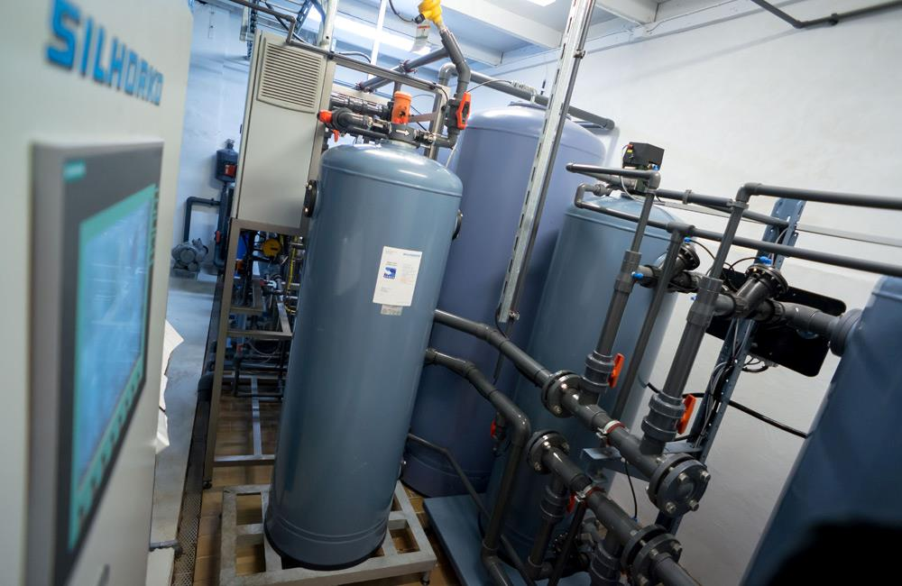

EUREX
EUREX - это установка деминерализатора ФСД (фильтр смешанного действия), состоящая из смеси катионо- и анионообменной смолы. При прохождении через ионообменный материал растворенные соли воды обмениваются с ионами водорода и гидроксильными ионами, которые объединяются с образованием воды.
Мы берем на себя регенерацию
Регенерация осуществляется на заводе EUROWATER. Таким образом Вы избегаете хранения и обращения с химическими реагентами. Фильтр отправляется на регенерацию, когда производительность исчерпана, и заменяется новым фильтром
с отрегенерированной ионообменной смолой - и все готово.
Применение
EUREX можно использовать для полировки деминерализованной воды до достижения низкой электропроводности. EUREX также используется в качестве дублирующей деминерализации после EDI в случае сбоя в работе.
Почему выбирают систему EUREX
Простая регенерация
Когда электропроводность слишком высока для применения или производительность ионообменников исчерпана, EUREX необходимо заменить, выполнив несколько простых шагов:
- Слейте воду из фильтра.
- Верните отработаный фильтр в местный отдел EUROWATER для регенерации.
- Вставьте новый отрегенерированный фильтр
- Откройте клапаны и получите доступ к деминерализованной воде
Прочная транспортная рама обеспечивает простоту использования при замене EUREX. Чтобы обеспечить непрерывную подачу деминерализованной воды, мы рекомендуем иметь дополнительный EUREX в качестве резервного.
Обзор продукта
Система EUREX состоит из серий EUREX и EUREX-H. Пожалуйста, свяжитесь с нами для получения дополнительной информации о конкретных модулях.
Загрузите брошюру EUREX, чтобы узнать больше о возможностях системы.
EUREX
| Макс. расход: | от 700 до 4000л/ч |
| Рабочее давление: | 6 бар |
| Электропроводность: | 0-20 μS/cm |
| Производительность: | от 37,800 до 756,000 л °GH |
| Транспортный вес: | 70-925кг. |
EUREX-H
| Макс. расход: | от 2700 до 14,000л/ч |
| Рабочее давление: | 6 бар |
| Электропроводость: | 0-20 μS/cm |
| Производительность: | от 145,800 до 756,000 л °GH |
| Транспортный вес: | 200-925кг. |
.jpg)
Опции
Операционный блок для удобства эксплуатации
Присоединения: DN 25/32 мм
Блок управления состоит из системы клапанов из ПВХ и кондуктометра, который непрерывно измеряет электропроводность. Блок прост в установке, а система клапанов облегчает подключение / отключение емкости.
Дублирующая деминерализация после EDI
На ТЭЦ качество воды имеет решающее значение для обеспечения надежной работы. EUREX является частью решения по очистке воды в качестве дублирующей деминерализации после EDI.
Если сбой питания затронул EDI, блок EUREX активируется и гарантирует, что проблема не повлияет на качество воды.
Полировка деминерализованной воды
EUREX можно использовать для полировки деминерализованной воды для получения более низкой электропроводности. На рисунке показан EUREX, используемый в компании по производсту химических реагентов. Качество воды является ключевым фактором качества конечного продукта.
.jpg)
Получите качественную деминерализованную воду
EUREX предоставляет Вам высококачественную деминерализованную воду - а мы занимаемся ее регенерацией. Наша опытная команда инженеров по продажам и обслуживанию готова помочь Вам начать работу.